This page will explain how areas work in Pikifen, and how you can make your own. If you're in a hurry, feel free to read just the lines in bold, and even skip ahead to the section you need. Otherwise, read every step in the tutorial and follow along! Feel free to save your area after a section, and use the button in the toolbar to check out how it looks in-game.
Note: The images in this page may be from several different versions of the engine or the tutorial. They can still be followed to understand the idea, however.
Introduction
Key concepts
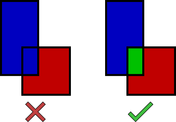
A layout made up of two overlapping polygons (like on the left) is not possible. It must be made up of three neighboring polygons (like on the right).
Before you go on, you should know the following concepts:
You should know how content works in the engine in general before starting.
To create the area's geometry, you draw the polygons that make out the floors.
Each "floor" (called a "sector") of the area is made up of a polygon. Imagine you're in a square room. This would be represented with a square sector in the engine. In that room is a carpet; this would be defined by a different sector inside of it, and with a different texture image. Like real-world polygons, there are edges and vertexes. An edge makes up a line of the polygon, and a vertex is a point that joins two edges.
Polygons cannot overlap. They can only have neighbors.
If you want a triangle shape overlapping a rectangle shape, you need to know that the intersection between the two must be an entirely separate sector. Check the diagram on the right.
A floor that is higher than its neighbor creates a wall.
In the room example, if there's a filing cabinet inside, it would be yet another floor, but it would be higher than the room's floor. The lines surrounding the cabinet's sector would be the walls of the cabinet.
Everything is top-down, and there are no ramps or slanted terrain.
You won't need to worry about what a wall looks like since you'll never see it, and you'll never need to worry about how a floor is angled.
To manage the layout, you add, delete, or move vertexes.
To change a sector's appearance or height, you change its properties instead, which can be edited in a specialized panel in the area editor.
You populate the area by placing objects.
Objects (or "mobs", short for "mobile object") are the Pikmin, leaders, plants, etc. in the area.
Guide
Creating a new area
For this guide, let's create a small forest-like area with no goal.
Open the area editor.
To do so, from the engine's main menu, choose the "Area editor" option.
In the dialog, press "Create new...", then enter the internal name.
The internal name is only used for development, and won't appear on the loading screen. Name it something like forest and leave the type as "Simple area" for this tutorial.
Notes:
A new area will already have a default sector with a grassy texture, as well as a leader object.
As a general tip, save your area often, so you can go back in case you corrupt its geometry.
Before we start, lets give the area its proper name.
Enter the info panel.
From the main menu panel, click on the "Info" button to open the area information panel.
Change the area's name by changing the text in the "Name" textbox.
This box can be found in the "General" section. Let's call our area "Simple Forest". Feel free to leave this panel now with the "Back" button.
Moving vertexes
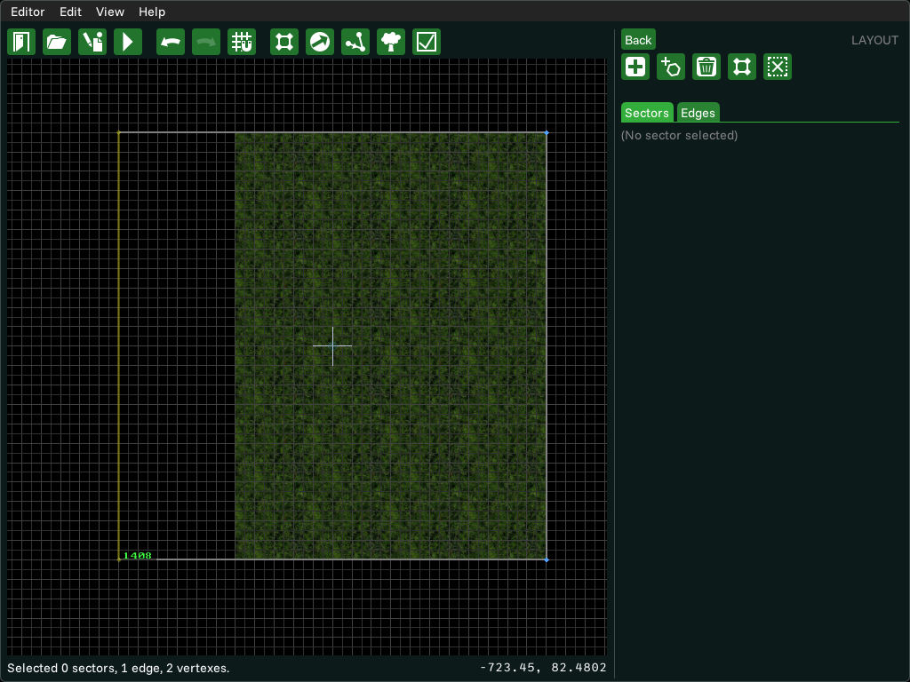
Moving the last edge to stretch out the sector.
The default sector works for a grassy plain, but is a bit small for our forest, so let's make it larger by dragging the vertexes outward. Vertexes are represented by blue dots. You can only edit the geometry in the "Layout" mode, so from the main menu panel, click the layout mode's button.
Click and drag a vertex to move it.
Left-click and drag the northwest vertex, and move it a bit north. The sector's shape will change accordingly. Do the same to the northeast vertex.
Click and drag an edge to move its vertexes.
Left-click and drag the bottom edge, and move it a bit to the south. Drag the left and right edges outward as well.
Notes:
Don't drag a vertex such that it would turn a sector inside out.
Creating a new sector
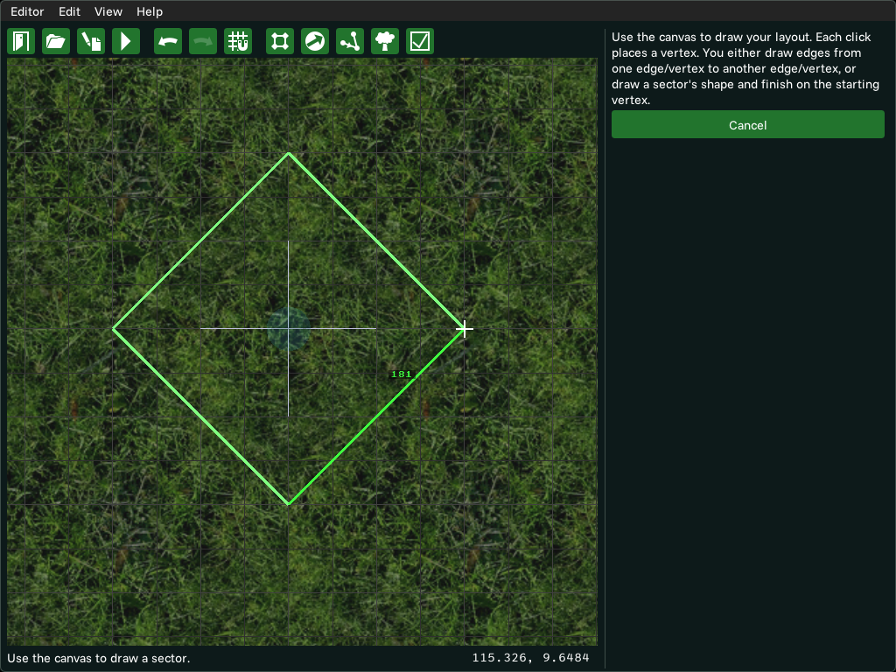
Creating a new sector, one click away from finishing.
Let's create a rock in the middle of the area. This will be represented by a new sector.
Click on the "+" button at the top of the layout panel.
This will enter the layout drawing mode.
Click on the area to place the first vertex.
Let's place the first vertex of our rock a bit to the east of the center of the area (which should be the origin, more or less).
Click in other spots to place the next vertexes in order.
Create the next vertex north of the center, then the second to the west of the center, then the third south.
Click the starting vertex to finish the sector.
Once you do, the new sector will have been created, with a rough diamond shape!
Notes:
Your drawings should represent one sector only, so don't try to cut through other sectors.
If you start on an edge or vertex, you can finish on another edge or vertex to split one sector into two.
Adding and removing vertexes
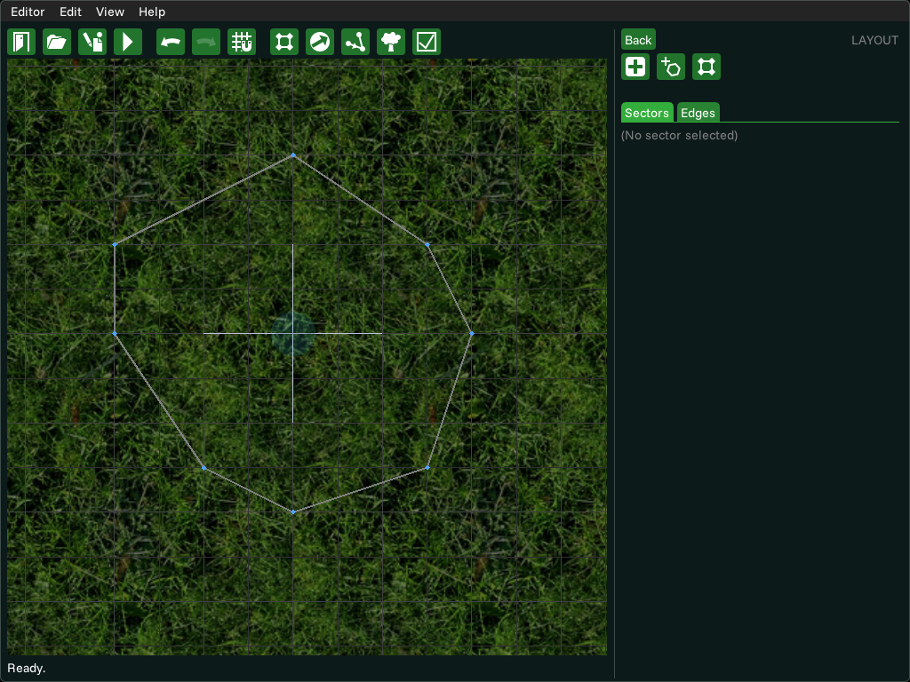
The rock, after adding some vertexes.
Our rock doesn't look very natural, so let's fix that by making it smoother. For that, we'll need new vertexes.
Double-click on a line to create a vertex there.
Create a vertex in one of the existing edges so you can round up the shape better. Create some more and move them around as you please. Don't worry about the geometry looking too angular, because that's very common in games.
Drag a vertex into a neighbor to delete it and the edge.
If you've added too many vertexes, simply grab one of them, and drop it in the same spot as a neighboring vertex. The two will be merged together, and the edge that connected the two will be gone.
Sector texture
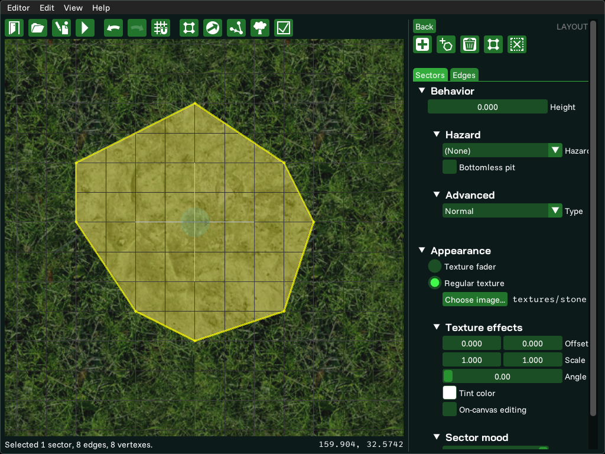
Changing the rock sector's texture to a stone pattern.
Because you've created the rock sector inside the grassy plain sector, it will have the same grassy texture. Let's change that.
Select the sector whose texture you want to change.
To select a sector, just click inside it. Once you do, the panel will show the sector's properties.
Click the "Choose image..." button in the "Appearance" section of the panel.
This button will allow you to set the sector's texture.
Choose a texture from the suggestions list, or browse for a new one.
Most likely, only the grassy texture will be available in the list for now. Textures can be found in the game_data/<pack>/graphics folders, though for the sake of organization they're usually placed in the textures subfolder. Click on "Choose another..." to pick a new bitmap to use. Let's pick textures/stone.
Sector height
To make the rock protrude from the ground, lets give it a height higher than the grassy ground. This will also make all of the rock's edges serve as walls.
Select the sector whose height you want to change.
Like before, click inside a sector to select it. If you check the panel's "Behavior" section, the sector's height should be 0, the same as the ground.
Change the number inside the "Height" textbox. Higher number means higher height.
For our rock, set it to something like 200. It may be hard to visualize how it ended up in your head, but know that 200 is much taller than a leader, but short enough that Pikmin can be thrown on top of it.
Stitching sectors
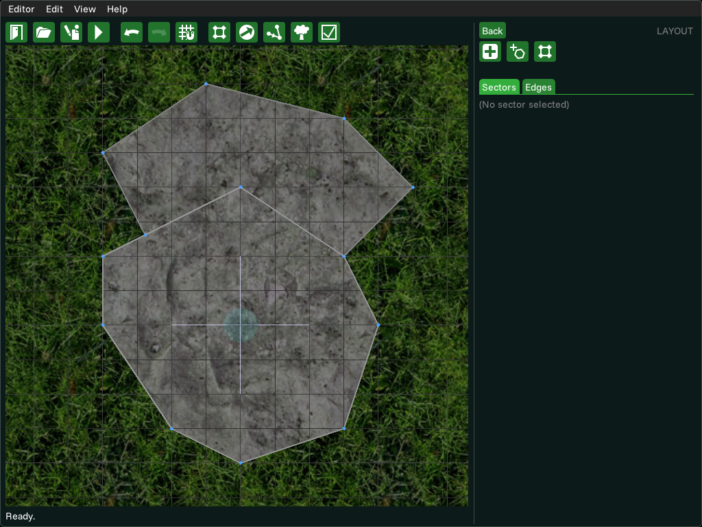
The smaller rock connected to the main one.
Let's create a smaller rock that's connected to the existing rock. Create a new sector, isolated, to the north of the central sector. Set its texture, and set its height to 100, so the new rock is also shorter than the big rock. To close off the gap between the two rocks, you'll want to stitch the sectors together.
Grab one of the first sector's vertexes and drop it on the other sector's vertex or edge.
In this case, grab one of the small rock's southern vertexes and drop it on top of one of the big rock's northern vertexes. If you've got the full sector selected, press Escape, or the "Clear selection" button in the panel to stop selecting it. After you drop it, the two vertexes will merge together.
If the sectors around you turn red, it just means you can't leave the area as it is, and need to continue the stitch.
If you leave the area as it is right now, with only this vertex merged, the grassy plain sector will fail to triangulate properly because of engine limitations. But you aren't done stitching the two sectors yet, so don't worry about it and continue.
Grab the next neighbor of the first vertex you grabbed, and drop it on the second sector's vertex or edge, without leaving gaps.
In our case, grab the next southern vertex of the small rock and drop it on a nearby northern vertex of the rock sector.
Blending ground textures
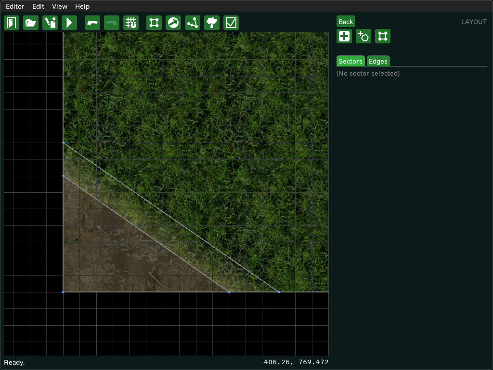
Blending the two ground textures.
The ground looks a bit bland. Let's add a patch of dirt in the corner. Draw a triangular sector hugging the southwest corner of the area by splitting the ground sector using one line, from its western edge to its southern edge. Set the triangle's texture to dirt (e.g. the dirt texture). But because the dirt and grass textures are so different, you'll see a clear split where one texture starts and the other begins. Let's smoothen this out.
Create a thin and long sector between the two sectors whose textures you want to blend.
In our case, draw a line parallel to the triangle's northeast edge to create a new split.
In the "Appearance" section of the sector panel, set it to a "texture fader" sector.
This will cause the sector to take a look at the sectors around it, and blend one texture into the other! The thicker your blending sector, the longer the transition.
If the blending is in the wrong direction, try making the blend sector longer and thinner.
The engine decides the direction to blend in based on the thickness of its edges. If you make the sector too chubby, it may think that you want to blend the other, longer edges's sectors.
If the blending becomes broken in certain places (example), split the blending sector into more sectors (example).
This is an engine and triangulation limitation. The blend may look a bit off in some angles, especially if your blend sector has a lot of curves. Just split it up and move it around until it works.
Out of bounds
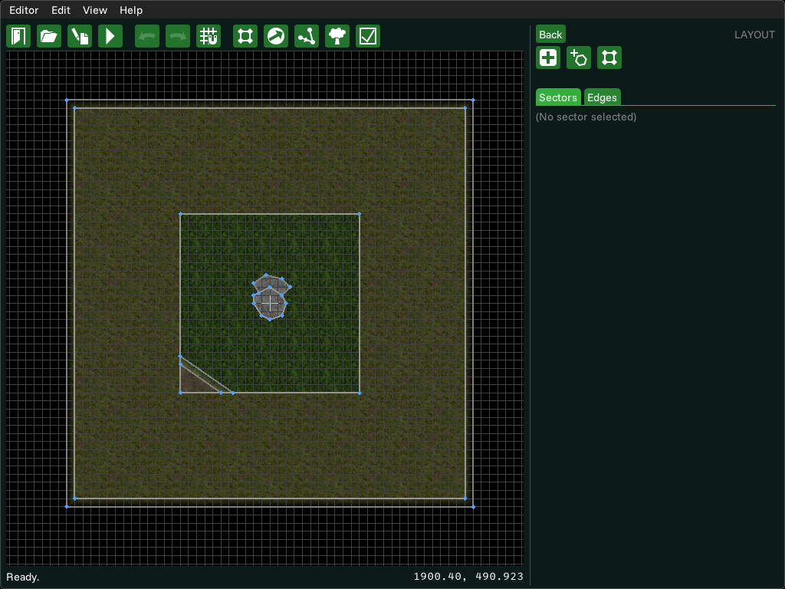
The outer sector, as well as a fading sector to fade into the void.
In the Pikmin games, there is the area you play in, and some geometry outside that is too high to reach. If you don't include this outer section, your area will just be connected to the void, which looks bad. After you create this "out of bounds" sector, you can also add a blending sector between it and the void proper so its texture fades out into the void.
Draw a sector around the entire area.
Make it big enough that it is hard for the player to see where it ends from within the play area. Making it the same shape as the general outline of your area is usually a good choice, but you can make it in any shape.
Set its height to something tall, but reasonable.
Something like 500 units above the usual ground level is a good number, and will ensure most of your area gets a wall shadow cast onto it. While you're here, set its texture to something different, like grass_light.
In the sector panel, go to the advanced behavior settings, and set the sector type to "Blocking".
This will ensure that nothing can go through this sector, even if the floor is within reach. This way, players won't accidentally throw Pikmin at the out-of-bounds area and exploit it, and Pikmin knocked by enemies won't be thrown too far to be reached.
Ramps
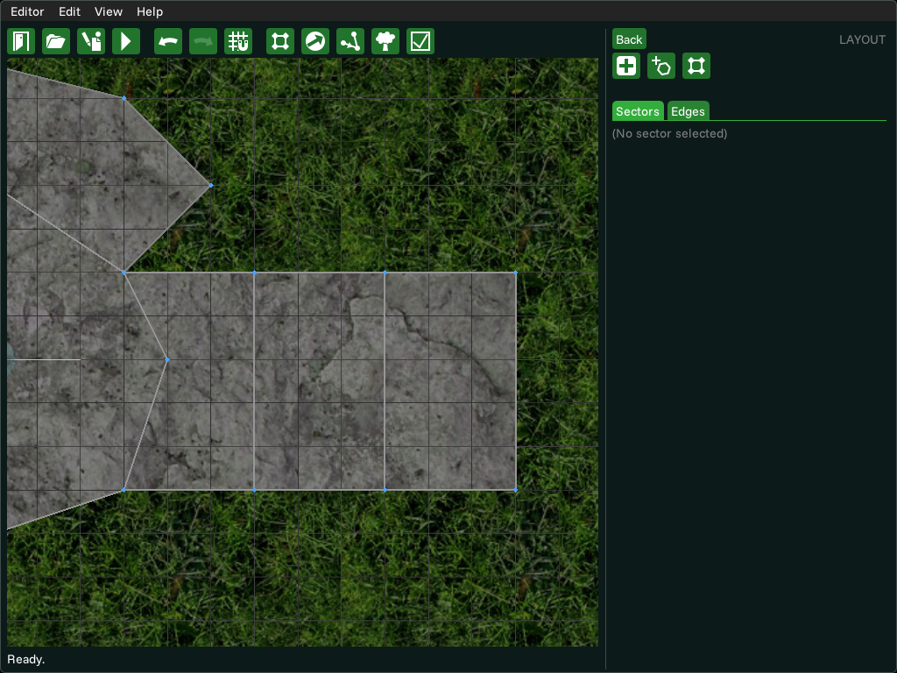
The ramp leading up to the big rock.
Let's create a ramp to reach the top of our big rock.
Ramps are basically just stairways. Create a series of sectors laid out like a stairway.
Draw one rectangular-like sector neighboring the rock, to its east, then another rectangular sector to the east of the previous one, neighboring it too, and then make a third one. Make them thick, but not too thick. Three steps should be enough for our 200-height rock.
Make each step of the stairway 50 units higher than the sector that comes before.
Objects can walk up 50-unit high steps without bumping into a wall. In our case, change the height of the easternmost step to 50, since the floor is 0. Then set the second to 100, and the third to 150. The rock is 200, so this will make a smooth walk up all the steps. Because these neighboring sectors are within stepping distance, the engine knows they're meant to serve as a ramp, so they won't cast shadows onto the previous step, making it all look like one seamless walkway.
Objects
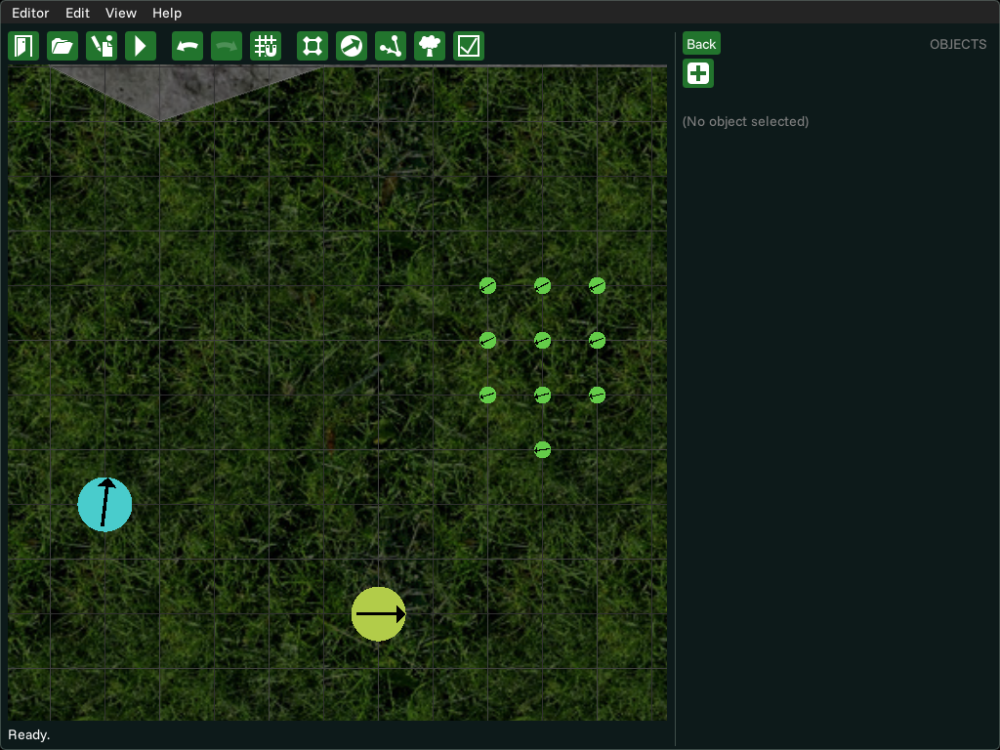
The Onion and 10 Red Pikmin, near Olimar.
From the main menu panel, you can enter the "Objects" mode to place objects and edit their properties. The area we created already comes with a leader, but let's add an Onion and few Pikmin.
Move objects by clicking on them and dragging them.
Let's move our leader object (likely Olimar) to near the southern edge of the grassy plain, so the player doesn't start in the middle of the rocks.
Set an object's properties, like its angle, by selecting it and changing the widgets in the panel.
Let's make Olimar face north instead of east. Select him, and in the "Angle" widget, set it to 270 degrees. You can best check the angle by looking at the object circle's arrow in the canvas.
Add new objects by clicking the "+" button in the top of the panel, then clicking the area.
When you press the button, you enter placement mode. You can now click on a spot in the area to place an object there. Click near the leader so we can place an Onion.
The new object will be of the last type you placed, or a Red Pikmin by default. Use the "Category" and "type" boxes to set its type.
For the category, choose "Onions", and in the type, pick the Red Onion. Afterwards, place a Red Pikmin nearby. You may also want to make it face Olimar.
Select objects and press the "duplicate" button on the panel to place copies in the area.
To make your job of placing more Pikmin easier, select the one you placed, and press the duplicate button. Now click on the area to place the copied Pikmin there. You can now select these two, duplicate, and place them in yet another spot, and repeat as you want to get a big number of objects placed! Try placing down 10 Pikmin for this example.
Notes:
Select an object and press the "delete" button in the panel to remove it.
Certain types of objects come with extra tips on how to use them. If the selected one does, some grayed-out text will appear under the category/type selection widgets. To read the tips, place your mouse over the text, and make sure you have tooltips enabled (menu bar, Help menu)!
Certain types of objects can also have some specific settings, present in the "Script vars" section. Internally, these are "script variables", so you'll see the "Full list" textbox update as you change them. Read more about this here.
You can also double-click somewhere empty in the area to quickly create a new object there.
Linked objects
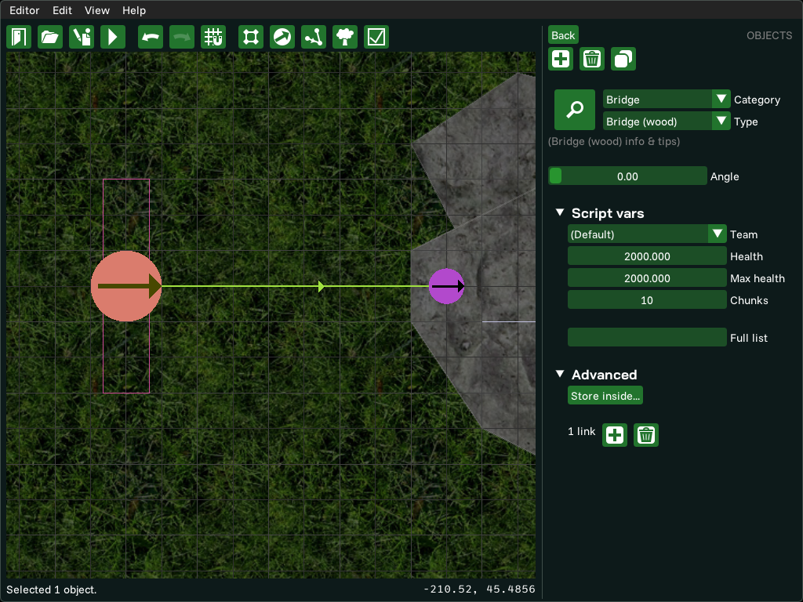
The bridge object linking to the dummy object.
Let's add a bridge to get on top of the rock. Simply place a wooden bridge object on the floor to the rock's west.
Some objects need to be linked to other objects to work properly.
The bridge object specifies where the bridge starts, but how do we tell it where it ends? Bridges are built in such a way that you can link them to another object, and the bridge will know that it has to be built such that it ends there.
"Dummy" objects are a great way to tell another object about some spot.
We can link the bridge to any object, but picking something like an enemy might be a bad idea, since it will always be moving about and attacking Pikmin... There's an object in the "Custom" category just called "Dummy". It has no purpose at all, other than being used for cases like this, where we just want to tell a bridge where to stop! In our case, we want the dummy object on top of the rock, a bit near the edge.
Select an object, and in the panel's "Advanced" section, click the "+" button to create a new link.
When you select the bridge, the panel's "Advanced" section will say something like "0 links". This means our selected object has no links right now. Simply click the "+" button and click on the dummy object to link to it. You'll see a line pointing from the bridge to the dummy object.
Links are one-way only.
Although we've linked the bridge to the dummy object, the dummy object is not linked to the bridge. This is not important for a dummy object, since it doesn't do anything anyway, but if you have, for instance, two seesaw-blocks, you must link them to each other individually.
Click the "trash" button to remove a link.
If you no longer want a given link, just select the object that owns the link, click that button, and then click on the object you want to remove the link from. You can also click on the little line that connects the two instead.
Adding water
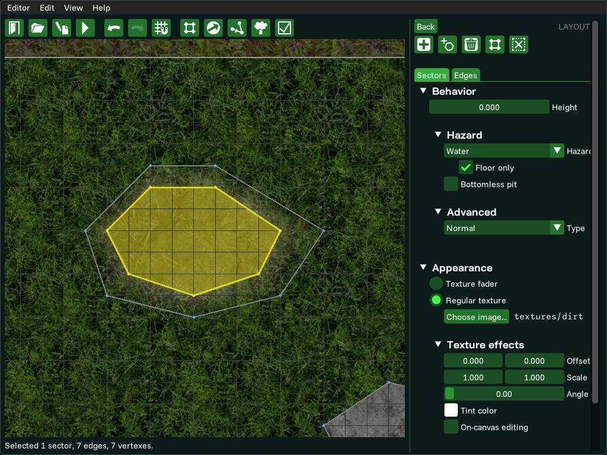
The pond of water, with a texture fader around it.
Let's place a small pond at the northwest corner.
Create the water's sector.
We will want any object standing on this sector to be considered submerged underwater. Make a nice oval shape for it, and add texture blending if you want.
In the sector behavior's "Hazard" section, choose water in the list.
All liquids are tied to a hazard. This means a sector can have muddy water, acid, lava, and so on, but there has to be a hazard controlling it. You can learn more here.
Carrying paths
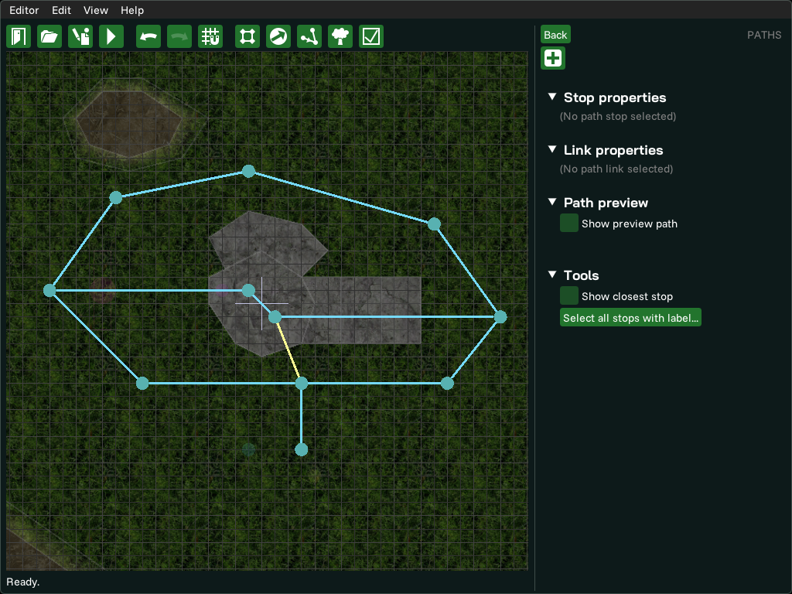
Some carrying paths all laid out.
If you go to northeast of the central rock with some Pikmin, and lie down to have them carry you, they will most likely get stuck on the rock as they beeline to the Onion. This is because they don't know what path to take. So let's define the general path Pikmin can take around the area, and what way they should go to avoid walls. First of all, from the main menu panel, enter the "Paths" mode.
Press the "+" button on the panel to enter the path drawing mode.
In this mode, you can draw the path on the area by clicking.
Click somewhere to place down a path stop.
Path stops are a bit like bus stops. The carrier Pikmin go in a straight line from the previous stop to the next, then turn to face the next stop, and so on. The first stop you want to create should be very close to the Onion, or at least in the starting region.
Click somewhere else to place a new stop, and connect the previous to the current one.
This will create the second stop and will also link the two. Now the Pikmin know that from one stop, they can go to the other. You should place the second stop to the south of the rock sector at the center. Keep clicking around to make a path that goes around the rock and ramps (remember to go around the bridge too, since when it's built, it will be a solid obstacle in the way too!)
Normal links allow any Pikmin to go from A to B, and B to A. Ledge links are one-way down the ledge, for walking Pikmin. Change link types in the panel.
Add a ledge-type link that goes from the top of the rock to the path stop at the south of the rock. It would make no sense to leave this one as a normal link since Pikmin could try to follow that path and bang against the rock's wall. By making it a ledge link, Pikmin atop the rock know to follow the link to drop down, but not the other way around. Unless they're Winged Pikmin!
Pikmin cannot take a line in the path if there is an obstacle object touching the line.
Back to two-way links, make your paths go up the big rock from the west and east sides. When making these sorts of lines, pretend all bridges are built and all gates are taken down. And make sure the line between the path stops touches any important obstacle. If the obstacle is still up, the Pikmin will understand that they cannot take this line, and will either try a different path, or wait at the stop before the obstacle.
Notes:
While outside of drawing mode, you can double-click a path link to split it into two, creating a stop where you click.
Keep in mind Pikmin will be carrying large objects through these paths, so make sure there's enough space around them.
Pikmin go to the nearest stop when they begin carrying. Make sure that for most places the nearest stop is not on the other side of a wall or through a hazard.
To make a path that only certain Pikmin can take, place one of that path's stops on top of a sector with a hazard. For instance, if a stop is on top of a water-hazard sector, only Blue Pikmin will go through there. Winged Pikmin will go over sectors with hazards anyway, if the hazard is on the floor only.
One important detail to add to most outdoor areas is the shadows the trees and leaves cast onto the floor. Because they sway left and right, and also change opacity in real-time, they cannot be baked into the textures of the area, and instead need to be their own thing. You can only edit tree shadows in the "Details" mode, accessible from the main menu panel.
Press the "+" button in the panel to place a new tree shadow where you click.
Click more or less in the center of the area, since this will also be the center of our tree shadow.
Set its texture with the "Choose image..." button.
This will list all bitmaps in the game_data/<pack>/graphics folders, though the dialog will recommend those in the textures subfolder. Until you choose a valid texture, the tree shadow will just be a black-and-violet pattern. Try using textures/tree_shadow, which comes with the engine.
Use the handles around the tree shadow to move it (center handle), rotate it (large circle around it), or scale it (edge and corner handles).
Use these to make the shadows cover the terrain, the outer rim, and even a bit of the void, just so the player cannot see when the shadow texture ends, even as it sways left and right. To scale the width and height independently, uncheck the "Keep aspect ratio" option. Alternatively, you can use the panel widgets to set these properties.
Notes:
Don't worry if the texture is so stretched that it becomes blurry. That's actually a good thing, since shadows of distant things are blurry.
You can make the shadows sway more or less with the sway multipliers, and you can make the texture less opaque in general with the opacity slider.
Reviewing
The sector-based system works well for areas in the engine, but has a few drawbacks. If you mess with the sectors, edges, or vertexes in ways that aren't expected, the sectors will have problems and will not work properly in-game. Even if everything works okay, it may not look exactly like you envisioned in the editor. You can use the review mode, accessible by the "Review" button on the main menu panel, to make sure everything is all right with your area, and that it matches up with what you want.
Use the "Find errors" button to search for problems with the area, from logical mistakes to parts of the geometry being corrupted.
If the area editor finds a problem, it will tell you what it is, and will explain a possible way to fix it. Some problems also unlock the "Go to error" button, which will move and zoom the camera to focus on the problem. This process is important to follow often, because if you ended up corrupting something, you will want to fix it sooner rather than later. To note is that this tool reports the most important problems first, so if you only get minor problems, that means there's nothing else more serious going on.
You can use the "Preview area" button to visualize how the area will look like.
This will show the textures painted out fully and walls casting shadows. You can also enable the "See tree shadows" option to show the tree shadows, if any. This allows you to get a nice feel of the overall aesthetic of your area.
Other basic operations
Deleting edges and sectors:
Crushing: You can delete a sector by merging the sector's edges, one vertex at a time, until it has no more edges left. If you select an edge and press the panel's "Delete" button, the edge will be removed, and because sectors cannot exist without being a closed polygon, any sector that depended on that edge will be gone, as will all edges that depended on that sector.
Leaking: You can also select one or more of its edges, then press the "Delete" button in the panel. This will delete that edge, and because sectors – which are polygons – can't be left open, the sector that was on the opposite side of the edge will "leak in" and take up the space of the sector you deleted. When this happens, the sector tries to "leak" the larger sector into the smaller one, so if you wanted the opposite, you can make adjustments before deleting or delete it with the other method.
Unstitching a sector:
Pulling vertexes apart: To separate two previously-stitched sectors, create a vertex on either one of the sectors, next to the vertex where the connection begins. Then create another vertex in the middle of that and start dragging it through the stitch, connecting it to the next vertex of the stitch. This made an opening. Continue with this process of moving the opening along the stitch and you should soon separate them. Imagine this as having a ball of plasticine and squeezing one end with a finger until it eventually splits.
Deleting an auxiliary sector: You can draw a new sector between the two sectors you want to unstitch. Then, delete one of its edges (see above), and the gap will have been made.
Making a bottomless pit: Just check the "bottomless pit" checkbox in the advanced behavior settings. Objects that touch the floor of this sector will be considered as falling into the pit. The floor is also not visible, so you see the background, or just black.
Making a circular sector: You can't draw actual circles, since those don't have lines, but you can get close by drawing a polygon with a lot of same-length lines. Instead of painstakingly drawing out the lines, you can click the button next to the new sector creation button to start the process of drawing a circular sector. Start by specifying the center of the circle, then its radius, and finally, how smooth it is.
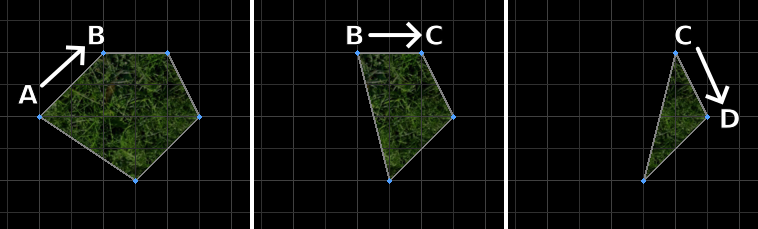
How to delete a sector by crushing it.
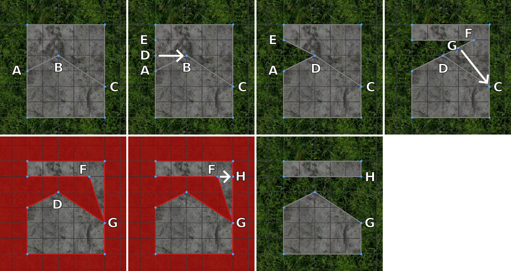
How to unstitch a sector by pulling the vertexes apart.
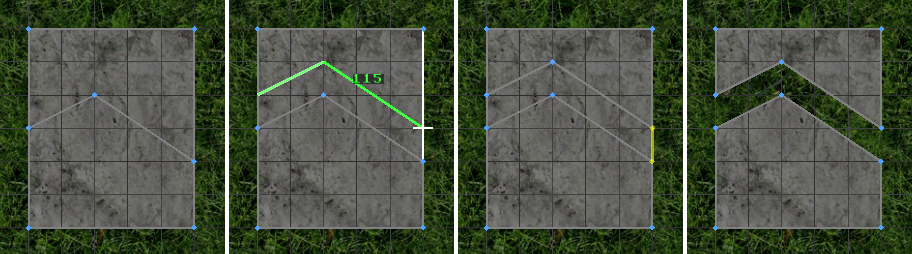
How to unstitch a sector with an auxiliary sector.
Advanced
Area background
If instead of a black void, you want the area to have a background, like the steel plates at the background of sublevel 1 of the Secret Testing Range, or if you just want the background to be a color that isn't black, you can.
In the area information panel, you can set the background's information here. Press "Choose image..." and you will be given a list of bitmaps in the game_data/<pack>/graphics folders, filtered by default for the textures subfolder. This texture will be tiled across the background, and you can change how far away the texture is (which affects the scrolling when you move the camera around), as well as how zoomed in it is. You will not be able to see the background in the area editor.
Subtitle, weather, and more
If you want your area to have a simple subtitle to show up on the loading screen, like the "Battle Enemies!" subtext in Mission Mode, you can specify it in the "subtitle" option in the area information panel. In addition, you can also specify the song and weather condition to use in this area (if any), the latter affecting the lighting throughout the day along with some visual effects. See this page for a guide on how to make songs and this page for weather conditions.
Advanced texture settings
Suppose you have a texture for a circular tree trunk and you want to put it on a sector. But the way the texture is aligned, it doesn't match up with the sector at all. It is possible to rotate, scale, and move a sector's texture such that it fits your needs. Enter the texture effects section of the sector panel. You can adjust the numbers in the panel to transform the texture. This process is very hard to do manually though, so you can instead activate on-canvas editing, choose what operation you want to perform, and then drag a sector's texture around to transform it. These transformations are based on the origin (coordinates 0,0), so for instance, the texture rotates around the area's origin.
In the advanced sector appearance settings, you can also tint the texture with any given color. This is a great way to darken the texture without actually tampering with the sector's brightness.
Wall appearance tricks
If you want to make it so that a wall will always cast a shadow, regardless of how tall it is, or if you want its shadow to look a different color or opacity, you can select that edge, go in the layout panel, enter the "Edges" tab, and change its properties there. Note that the lengths and colors of wall shadows will attempt to transition smoothly with each other, so don't be surprised if your wall isn't the color you expect, because it's likely taking in the color of its neighbors into account. You may want to split that edge into multiple ones, since there'll be no transition between two wall shadows that have the same look.
Normally, when you have a wall, you have a higher floor that suddenly stops and dips down directly downwards to the lower floor. You can make the ledge here look smoother by editing the edge's properties and applying a "ledge smoothing" effect. Be careful though: because wall shadows and ledge smoothing effects look so similar, you may confuse the player. It can be hard to distinguish which of the sectors is below and shaded, and which is above and smoothened. Try to use this sparingly and only in places that make sense, like rocks (rocks are usually rounded, and protrude above the floor). Also, try to keep the opacity of the ledge smoothing effect lower than the opacity of the wall shadow.
Script variables
When an object spawns in the area, it can read some "script variables" to change its behavior. These take on the format variable=value, and in the object's internal data, the full list separates each one with a semicolon (;). Example: maturity = 0; sprout = true.
Although you can edit the list manually using the "Full list" textbox in the panel, most variables can be edited with dedicated widgets, also present in the panel's "Script vars" section. That said, if you know the object's script, and want to edit a variable that is not present as a widget, you can edit the "Full list" field instead and set the variable there.
Sideways view
At times, it may be very hard to visualize in your head just how high a sector is in comparison to the sectors around it. You can open a graph that shows what a slice of the area looks like from the side, which should help you get a better understanding of your world. When reviewing the area, there is an option to enable the cross-section view, which, as the name implies, draws a cross-section of the area. The length and angle of this cross-section is determined by points A and B, that show up on the area when you enable the option.
Move the points to make them cross some edges, and see the window at the top-left update accordingly. To get an idea of what you're seeing, imagine that, from the game world, you cut an ultra-thin block, represented by the line, and are looking at it from the side. The location of A is at the left of the chart, whereas B is on the right. If you move your mouse near the line, you'll see a gray line on the window that represents where the cursor is. You can use this to get an idea of where each sector is. The chart will also have a Pikmin icon, which represents the standard Pikmin height, just to give you extra perspective.
Reference
If you made a reference image for your area, like a sketch, you can place it on top of the editor, so that you may draw through it. The information for the reference will be saved in your user data folder, and will not show up in-game, only in the editor. To use one in your area, go to the Tools panel, and specify the file path there. It can be any file in your computer, so it doesn't even need to be in the engine's folder. Next, you can either edit the position and size of the reference using the textboxes, or you can drag the handles; they should work just like transforming a tree shadow. While you're working, if your reference is in the way, remember that there are controls in the toolbar to quickly change its visibility.
Vertex transformation
In the area editor's options (accessible in the menu bar), you can enable selection transformation. This allows you to select several vertexes and transform them all together. This means you can move them all together with the transformation widget's center handle, or you can scale the entire selection, or you can rotate them. When doing this, be careful with the edges connected to these sectors, or you may move them in a way that's not allowed.
Advanced pathing
Objects will always take the shortest available path to their destination. That said, there are some rules that may stop a path stop or path link from being chosen. You can use this to limit certain paths to certain Pikmin types, or until certain conditions are met, or even just for special uses. For normal objects, the rules relate to the object itself, but for an object that's being carried, the rules check every Pikmin that is carrying that object. This way, for instance, a Red Pikmin that's helping to carry a carcass won't take the water path just because the other carriers are Blue Pikmin.
If a path link is blocked by an obstacle, it can't be used until the obstacle is destroyed.
Objects won't take a path stop if that stop is on a sector with a hazard that they are vulnerable to. If the object or its carriers can fly, and the hazard is floor-only, then this rule is ignored since the object can naturally fly over the hazard without a care. Objects can take this path again if the sector loses that hazard (e.g. a destroyed clog drains the sector's water).
Path stops with the "script use only" property can only be used by objects if their script tells them to. This means Pikmin won't use this for carrying, for returning to piles, etc.
Path stops with the "light load only" property can only be used by objects that are not carrying anything, or are carrying objects that only have a weight of 1. An object that's simply holding another won't count for this, like a leader holding a Pikmin, a Pikmin holding a tool, or an enemy with Pikmin latched onto it.
Path stops with the "airborne only" property can only be used by objects that can fly.
It's also worth keeping in mind that flying objects that follow a path will still go from one stop to the next in a linear fashion, but they will also go for the spot that's 50 units above the next path stop. This means, for instance, that Winged Pikmin carrying a corpse will aim for the spot 50 units above the path stop closest to the Onion, and then will need to descend to 0 height in order to deliver to the Onion. If you separate your path stops from the destination objects, this descent will happen sooner, but don't separate them so much that your pathing becomes unreliable!
Precautions
Don't drag vertexes such that you would turn a sector inside out, nor that two lines would intersect.
Areas are very complex in the engine, and crashes can happen. Save often, and if you happen to experience a crash and lose your work, open the area again, go to the tools menu in the area editor, and load the automatically-saved backup from there.
Sector creation is equally complex. So long as you don't try to cut corners or do anything too fancy when creating a sector, it should all go fine.
The "Find errors" feature might detect some of the more common problems you may get yourself into, but don't rely on it for everything.
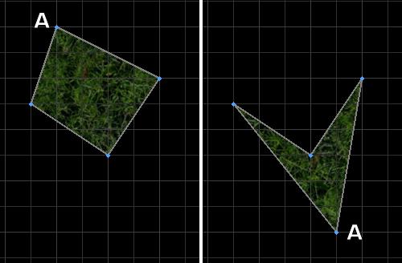
Don't turn a sector inside-out like this.
Troubleshooting
If the area editor crashes or something breaks the area, remember that backups are automatically created. Before the game overwrites the backup with something you don't want, consider going into the area editor's tools, and loading from the backup.
If Pikmin that are following a path to get to an object reach their destination, but aren't interacting with the object and are instead walking against it, that's probably because they're trying to reach the path stop inside the object. Consider placing the path stop outside.
If objects that are following a path are entering a path stop but not realizing where to go next, keep in mind that unless told to go straight, or told the path is impossible, an object will always head to the closest stop first, and try to leave the path graph at the stop closest to their destination. Maybe the start or end stop isn't where you think it is. Try using the path preview tool to understand what's going on.
If when you select one sector you realize two sectors get selected, that might be because it's still just the one sector, but you ended up dividing its geometry into two separate polygons, or "sub-sectors". Nothing is wrong with this per se, but you might be better off creating a new sector inside one of the sub-sectors, or just splitting one of the sub-sectors, and try to fill it out entirely using your new sector. That way both polygons will have one clearly defined sector each.
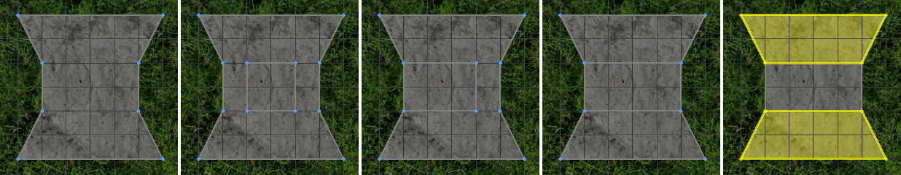
Splitting a sector like this can cause it two divide into two sub-sectors.
Controls
On top of the general editor controls, and the area editor's shortcut keys, the following controls also exist:
Undo latest vertex, when drawing new sector
Canvas
Backspace
Quit out of certain panels
Any
Escape
Free mouse cursor from snapping
Canvas
Shift
Force a selection box when dragging the left mouse button
Canvas
Shift
Snap to the horizontal or vertical axis when dragging
Canvas
Ctrl
Add to existing selection, when selecting something
Any
Ctrl
Select all objects, vertexes, path stops, etc.
Canvas
Ctrl + A
Set the selected sector's height by moving the cursor up or down
Canvas
H
Make all selected objects face cursor position
Canvas
R
When scaling with the on-canvas transformation widget, lock the center instead
You can move entire sectors by clicking on them and dragging them.
You can drag multiple vertexes, edges, sectors, objects, or path stops together by selecting them and dragging one.
You can force the engine to only select vertexes, vertexes and edges, or everything, by setting the selection filter. Click on the filter button at the top of the "Layout" panel to toggle the current filter.
Holding Shift will free the mouse, so that you're no longer forced to do things exactly on the grid.
When creating a new vertex, object, etc. via double-click, you don't need to let go of the mouse button on the second click; you can move the vertex right away if you keep it held.
When drawing out a new sector, if you accidentally placed the last vertex in the wrong spot, you can click that same vertex to try again.
The origin (coordinates 0,0) is the default location of the camera in the area editor, and the closer to the origin, the easier coordinates are to read. So you should try designing your area so the origin is near the center, the starting point, or somewhere else useful, instead of some place off in the distance.
A "texture fader" sector will also fade between levels of brightness and texture tints. Use this creatively.
Avoid making choke points that are smaller than 192 units in width. This is the typical width of gates, and is the expected width for most carriable objects to fit through.
{kind=link}
{kind=link}
{kind=link}